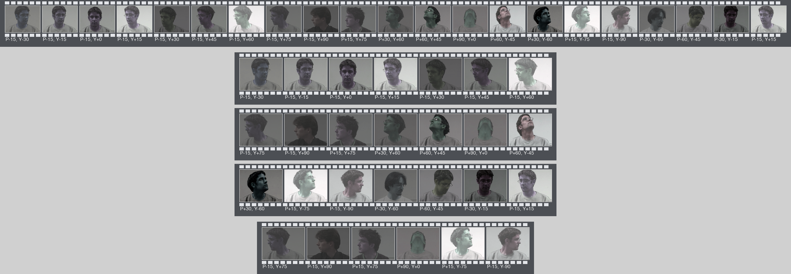
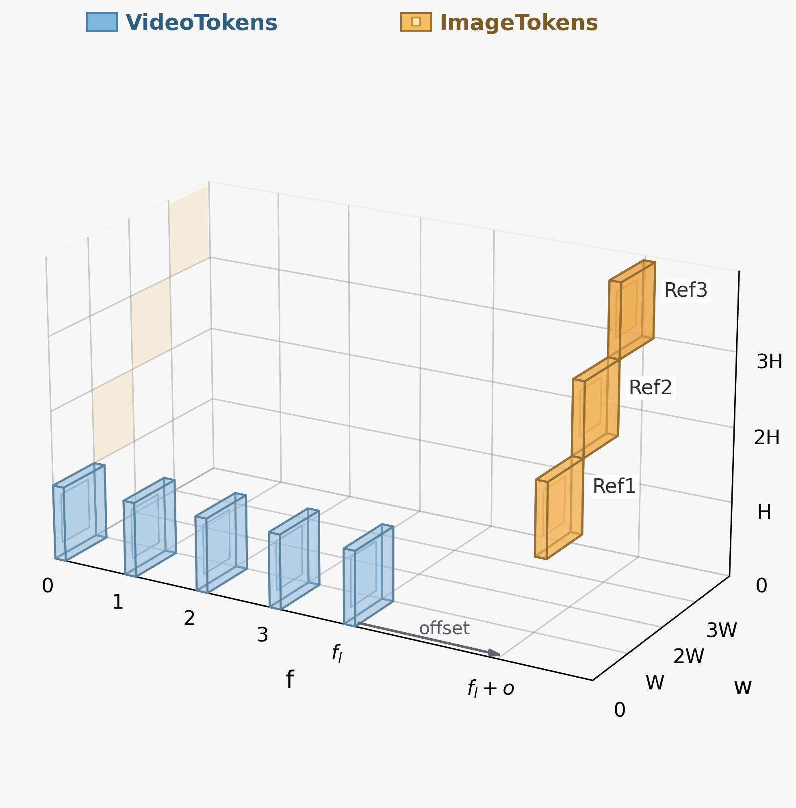

Abstract
Single-view reference-to-video methods often struggle to preserve identity when the face rotates across large pose ranges. Adding more reference images helps, but it also makes the generation process prone to view-dependent copy-paste artifacts, where the output collapses toward one conditioning angle and loses natural facial motion.
Mv2ID addresses this tradeoff with a multi-view conditioned framework trained under in-paired supervision. The method combines region masking to discourage shortcut learning with a reference-decoupled RoPE design that models video tokens and conditioning tokens differently. The resulting model improves identity consistency under large facial-angle variations while keeping the motion more natural.
Video
Main teaser video placeholder
Replace with MP4, WebM, GIF, or YouTube iframeThis section is intentionally scaffolded like the reference page: one large hero video, and a row of smaller follow-up slots for method animation or extra qualitative demos.
Method Animation
Use this slot for token interaction, masking strategy, or RoPE animation.
Qualitative Reel
Use this slot for a montage of successful multi-view identity-preserving cases.
Comparison Clip
Use this slot for side-by-side baseline comparison or failure-case analysis.
Methodology

Overview panel for the data and preprocessing pipeline. This can later be replaced with the final polished method figure from the paper.

Mv2ID uses multi-view identity references without letting any single reference dominate the generation process. The region-masking strategy forces the model to recover identity cues from complementary views instead of memorizing one angle.
The reference-decoupled RoPE module further separates how video tokens and conditioning tokens are encoded, making the temporal structure of the video and the structural layout of the references easier to model together.
Qualitative Results
Quantitative Snapshot
Temporary quantitative panel placeholder. Swap this with the final benchmark or user-study figure once the camera-ready results are fixed.
Citation
Replace the anonymous placeholder below with the final BibTeX entry after submission status allows it.
@inproceedings{mv2id2026,
title = {Identity-Consistent Video Generation under Large Facial-Angle Variations},
author = {Anonymous},
booktitle = {European Conference on Computer Vision (ECCV)},
year = {2026}
}